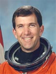

Lyndon B. Johnson Space Center
Houston, Texas 77058
|
National Aeronautics and Space Administration Lyndon B. Johnson Space Center Houston, Texas 77058 |
 |
Biographical Data |
||
RICK DOUGLAS HUSBAND (COLONEL, USAF)
NASA ASTRONAUT (DECEASED)
PERSONAL DATA: Born July 12, 1957, in Amarillo, Texas. Died on February 1, 2003 over the southern United States when Space Shuttle Columbia and the crew perished during entry, 16 minutes prior to scheduled landing. He is survived by his wife and their two children. He enjoyed singing, water and snow skiing, cycling, and spending time with his family.
EDUCATION: Graduated from Amarillo High School, Amarillo, Texas, in 1975. Received a bachelor of science degree in mechanical engineering from Texas Tech University in 1980, and a master of science degree in mechanical engineering from California State University, Fresno, in 1990.
ORGANIZATIONS: Member of the Society of Experimental Test Pilots, Tau Beta Pi, Air Force Association, and the Texas Tech Ex-Students Association.
AWARDS: Posthumously awarded the Congressional Space Medal of Honor, the NASA Space Flight Medal, the NASA Distinguished Service Medal, and the Defense Distinguished Service Medal (DDSM.
SPECIAL HONORS: Distinguished Graduate of AFROTC, Undergraduate Pilot Training, Squadron Officers School, F-4 Instructor School, and USAF Test Pilot School; Outstanding Engineering Student Award, Texas Tech University, 1980; F-4 Tactical Air Command Instructor Pilot of the Year (1987); named a 1997 Distinguished Engineer of the College of Engineering, Texas Tech University. Military decorations include the Meritorious Service Medal with two Oak Leaf Clusters, the Aerial Achievement Medal, the Air Force Commendation Medal, the National Defense Service Medal, two NASA Group Achievement Awards for work on the X-38 Development Team and the Orbiter Upgrade Definition Team.
EXPERIENCE: After graduation from Texas Tech University in May 1980, Husband was commissioned a second lieutenant in the USAF and attended pilot training at Vance Air Force Base (AFB), Oklahoma. He graduated in October 1981, and was assigned to F-4 training at Homestead AFB, Florida. After completion of F-4 training in September 1982, Husband was assigned to Moody AFB, Georgia flying the F-4E. From September to November 1985, he attended F-4 Instructor School at Homestead AFB and was assigned as an F-4E instructor pilot and academic instructor at George AFB, California in December 1985. In December 1987, Husband was assigned to Edwards AFB, California, where he attended the USAF Test Pilot School. Upon completion of Test Pilot School, Husband served as a test pilot flying the F-4 and all five models of the F-15. In the F-15 Combined Test Force, Husband was the program manager for the Pratt & Whitney F100-PW-229 increased performance engine, and also served as the F-15 Aerial Demonstration Pilot. In June 1992, Husband was assigned to the Aircraft and Armament Evaluation Establishment at Boscombe Down, England, as an exchange test pilot with the Royal Air Force. At Boscombe Down, Husband was the Tornado GR1 and GR4 Project Pilot and served as a test pilot in the Hawk, Hunter, Buccaneer, Jet Provost, Tucano, and Harvard. He logged over 3800 hours of flight time in more than 40 different types of aircraft.
NASA EXPERIENCE: Husband was selected as an astronaut candidate by NASA in December 1994. He reported to the Johnson Space Center in March 1995 to begin a year of training and evaluation. Upon completion of training, he was named the Astronaut Office representative for Advanced Projects at Johnson Space Center, working on Space Shuttle Upgrades, the Crew Return Vehicle (CRV) and studies to return to the Moon and travel to Mars. He also served as Chief of Safety for the Astronaut Office. Husband was pilot on STS-96 (1999) and crew commander on STS-107 (2003), logging 24 days, 51 hours and 33 minutes in space.
SPACE FLIGHT EXPERIENCE: STS-96 Discovery (May 27 to June 6, 1999) was a 10-day mission during which the crew performed the first docking with the International Space Station and delivered 4 tons of logistics and supplies in preparation for the arrival of the first crew to live on the station early next year. The mission was accomplished in 153 Earth orbits, traveling 4 million miles in 9 days, 19 hours and 13 minutes.
STS-107 Columbia (January 16 to February 1, 2003). The 16-day flight was a dedicated science and research mission. Working 24 hours a day, in two alternating shifts, the crew successfully conducted approximately 80 experiments. The STS-107 mission ended abruptly on February 1, 2003 when Space Shuttle Columbia and the crew perished during entry, 16 minutes before scheduled landing.
MAY 2004